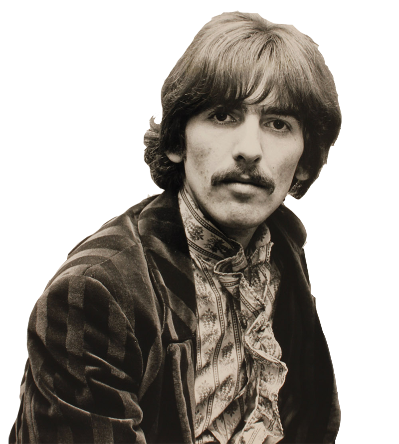
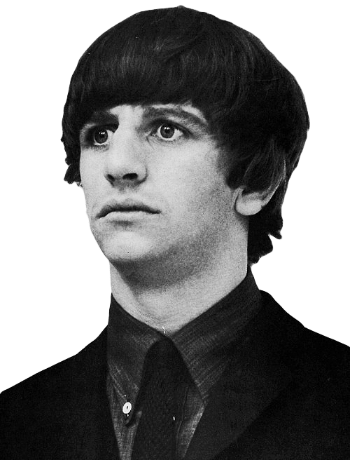

John Lennon

John Winston Lennon (Liverpool, 9 de octubre de 1940-Nueva York, 8 de diciembre de 1980) fue un artista, músico, multiinstrumentista, cantautor, compositor, productor, escritor y pacifista británico, conocido por ser uno de los miembros fundadores de la banda de rock The Beatles.
Nació en Liverpool, donde siendo adolescente se vio inmerso en el boom británico del
skiffle; formó la banda The Quarrymen en 1956, que posteriormente en 1960 se convertiría
en The Beatles.
Cuando el grupo se desintegró a finales de esa década, Lennon inició
una carrera como solista en la que publicó varios álbumes como John Lennon/Plastic
Ono Band e Imagine, y canciones como «Give Peace a Chance» e «Imagine».
la mayoría de ellas expresan sus ideas liberales y pacifistas. Después de contraer matrimonio con Yoko Ono en 1969 cambió su nombre a John Ono Lennon. Se retiró de la escena musical en 1975 para criar a su pequeño hijo Sean, pero resurgió junto con Ono en 1980 con el nuevo álbum Double Fantasy. Fue asesinado tres semanas después de su lanzamiento.
Paul Mccartney

James Paul McCartney (Liverpool, Merseyside; 18 de junio de 1942) es un cantautor, compositor, músico, multiinstrumentista, escritor, activista, pintor y actor británico.
Junto a John Lennon, George Harrison y Ringo Starr, ganó fama mundial por ser el bajista y uno de los cantantes de la banda de rock The Beatles, reconocida como la más popular e influyente en la historia de la música moderna; su asociación compositora con Lennon es una de las más célebres del siglo xx.
McCartney es reconocido como uno de los compositores y artistas más exitosos de todos los tiempos, con sesenta discos de oro y sobrepasando los 100 000 000 de álbumes y los 100 000 000 de sencillos vendidos tanto en su trabajo como solista como con The Beatles.
Su canción de 1977 con Wings, «Mull of Kintyre», es uno de los sencillos más vendidos en el Reino Unido. Ha sido incluido dos veces al Salón de la Fama del Rock (como miembro de The Beatles en 1988, y como artista individual en 1999), y se le ha reconocido con veintiún Premios Grammy (habiéndolos ganado tanto individualmente como con The Beatles). McCartney ha escrito, o coescrito, 32 canciones que han alcanzado el número uno en el Billboard Hot 100, y hasta 2014 había vendido más de 15 millones de unidades certificadas por la RIAA en los Estados Unidos. McCartney, Lennon, Harrison y Starr fueron nombrados miembros de la Orden del Imperio Británico en 1965, y en 1997, fue elevado al rango de caballero por sus servicios a la música.
George Harrison
George Harrison (Liverpool, 25 de febrero de 1943-Los Ángeles, 29 de noviembre de 2001) fue un músico multiinstrumentista, compositor, cantautor, productor musical, productor cinematográfico, actor, filántropo, activista pacifista, ecologista, guitarrista y cantante británico de la banda de rock The Beatles.
Aunque John Lennon y Paul McCartney fueron los principales compositores dentro del grupo, Harrison también incluyó composiciones propias en los discos de The Beatles, tales como «I Need You», «Taxman», «I Me Mine», «Within You Without You», «Old Brown Shoe», «It's All Too Much», «While My Guitar Gently Weeps», «Something» y «Here Comes the Sun».
Las influencias musicales más tempranas de Harrison incluyeron músicos como Big Bill Broonzy, Chet Atkins, Chuck Berry, Ry Cooder y Buddy Holly. En 1965, fue pionero en introducir música hindú en occidente a través de instrumentos como el sitar, que tocó en canciones como «Norwegian Wood (This Bird Has Flown)» y «Within You Without You». Harrison tuvo también un especial interés por la cultura y religión hindú a través del movimiento Hare Krishna e introdujo a sus compañeros de The Beatles a la filosofía oriental a través del maharishi Mahesh Yogi, determinante en la evolución musical del grupo desde la grabación de The White Album (1968).
Ringo Starr
Richard Starkey (Liverpool, 7 de julio de 1940), más conocido como Ringo Starr, es un músico, multiinstrumentista, cantante, compositor y actor británico. Fue el baterista de la banda de rock The Beatles. Antes de formar parte de The Beatles, Starr fue miembro de otra banda de Liverpool, Rory Storm and the Hurricanes.
En agosto de 1962, Pete Best fue despedido y Ringo ocupó su lugar. Además de tocar la batería, Starr participó como vocalista en varias canciones versionadas o creadas por el grupo como «With a Little Help from My Friends», «Yellow Submarine», «I Wanna Be Your Man», «Act Naturally», «Boys», entre otras y fue el compositor de las canciones «Don't Pass Me By» y «Octopus's Garden».
La contribución creativa de Starr a la música de The Beatles fue sujeto de elogios por músicos y críticos. El baterista Steve Smith comentó que la popularidad de Starr «dio luz a un nuevo paradigma donde se comenzó a ver al batería como un participante más en el aspecto compositivo». En 2011, los lectores de la revista musical Rolling Stone eligieron a Starr el quinto mejor baterista de todos los tiempos.